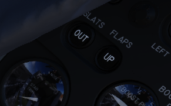
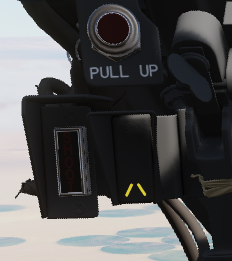

Flight Controls
Control Sticks
A control stick is provided in both cockpits, with near-uniform switchology between the two. A Trim Control is found on both sticks to provide force reduction and minor flight path correction in the pitch and roll axis. Weapons are deliverable through both a Trigger (for air to air missiles and the gun) and a Bomb Release Switch. Both positions carry a Nose Gear Steering Switch that doubles as a radar auto-acquisition control for the radar in visual range combat, and sensor focus control for video-directed air to ground weapons. An Emergency Quick Release lever on each stick is available to immediately deactivate the anti-skid, ARI, autopilot, and stability augmentation. Unique to the front cockpit control stick is the Air Refueling Release Button- a dual-role control that performs the boom disconnect function its name implies, as well as a number of weapon selection functions.
Also unique to the front cockpit stick is a force transducer, to allow the pilot fine adjustment control of the AFCS with the autopilot functionality engaged. In the event the force applied to the stick exceeds the AFCS breakout limit, autopilot will be turned off.
Aileron-Spoiler Control and Stabilator Control Feel and Trim Systems
The Aileron-Spoiler Control System and the Stabilator Control System both offer trim following; the former through a screwjack actuator, the latter using a servo directed by the AFCS. These functions cause the stick to position relative to the current trim and autopilot position when the crew member in control goes "hands off". It is therefore advisable to maneuver the stick to the same position, or to gently move the stick to "breakout force" prior to disengaging the autopilot system to reduce the chance for an abrupt return to pilot control.
To confirm current state of the stabilator trim, a Stabilator Trim Position Indicator is provided on the front cockpit left vertical panel.

Rudder Control System
Yaw axis control is directed by the rudder pedals found in both cockpits. To offset any relative skidding due to wind effect, stores imbalance, or minor engine output deviation, a Rudder Trim Switch is found on the engine control panel in the front cockpit. On the ground, the pedals themselves can be pressed independently for differential braking, and the rudder axis itself functions as the nose wheel steering directional control when the Nose Wheel Steering button on either control stick is pressed.
Aileron-Rudder Interconnect (ARI)

To assist in low speed turn coordination, the Phantom II includes an Aileron-Rudder Interconnect. The system is engaged automatically with the Slats Flap Switch in the Out and Down position, and below the flap blowup speed of 230 knots. With the system engaged, the rudder can be driven up to 10 degrees by the interconnect to alleviate pilot workload. In the event either seat in command requires the ARI deactivated, the system can be disconnected by pulling the Emergency Quick Release switch on their respective control stick. Releasing the switch will re-engage the ARI. Function of the ARI can always be overridden through the rudder pedals.
Stability Augmentation System
The F-4 offers a three axis Stability Augmentation system, with independent Pitch, Roll, and Yaw channels. The system is to smooth out flight in normal cruise regimes, rather than provide enhancement in maneuvering. The control panel for the Stab Aug system is found in the front cockpit.
The Pitch channel provides a maximum control authority to the stability augmentation of one half degree (0.5) above or below the current pitch trim setting.
The Roll channel gives the stability augmentation 7.5 degrees of control of the ailerons, and up to 11 degrees of deflection to the spoilers.
The Yaw channel permits augmentation up to 5 degrees left or right from the current rudder trim position.
Because the stability augmentation system can misinterpret roll oscillation in high AoA maneuvering and inadvertently invoke adverse roll, it is suggested to disable the Roll channel prior to aerobatics or combat to alleviate this possibility.
With the Roll stability augmentation system engaged, roll rate using the rear control stick can be less than that in the front cockpit relative to the amount of deflection; conversely, when returning control to the front cockpit, the rate can jump due to said difference.
Slats Flap System
The Slats Flap system is manually selected for takeoff and landing, then automatically controlled relative to AoA for best handling performance in all other flight regimes. Control is through a three position switch found outboard of the left throttle handle in the front cockpit and driven by the aircraft hydraulic system. The three switch positions are Norm, Out, and Out and Down, and the resulting command can be moderated based on whether or not the landing gear being deployed.

Norm is the standard in-flight position, locking the Flaps and automatically programming the Slat deployment as a function of AoA.
Out deploys the Slats to their fully deployed position. Should the landing gear be deployed, both the Slats and Flaps will deploy.
Out and Down fully deploys both the Slats and the Flaps. Should the landing gear not be down, the Wheels Light on the Telelight Panel will illuminate and flash.
Both cockpits have a Slats Flap Indicator, which read In and Out, along with a barber-pole reading when the surfaces are in transition.

In the Norm position, Maneuvering Slat deployment is a function of AoA; above 11.5 units they will extend, then retract when the aircraft is reduced below 10.5 units. Maneuvering Slat operation includes a speed-induced blowback; slats will retract due to air pressure between 568 to 602 knots.

To the rear of the Fuel Control Panel in the front cockpit is the Slat Override Switch. Guarded, this switch has two positions: Norm and In. Defaulted to Norm under the guard, switching to In forces retraction of the Slats no matter the current state of the aircraft- AoA or Slats Flap Switch position. Actuating the Override will give a SLATS IN warning on the Telelight Panel and illuminate Master Caution.
The Slats Flaps system also has an Emergency system; handles are found on the Slats Flaps control panel in the front cockpit, and next to the rear cockpit throttle pair. The emergency system uses pneumatic pressure, and does not require electrical power to force deployment. The emergency system can only function once, and can be actuated at any airspeed; however, above 230 knots, the Flaps will retract based on air pressure, and the normal Slat retraction speeds also apply.
Speed Brakes
Underneath the aircraft and close to the rear Sparrow recesses are the speed brakes, installed on the wings. The speed brakes are driven by the aircraft's hydraulic system and actuated by a three position switch found on the inboard throttle in both cockpits. Either switch will actuate the brakes. The positions are Out, Stop, and In; the first and last positions are momentary (reverting to Stop upon being released).
Brake actuation illuminates the Speed Brake Out Indicator Light found on the Telelight Panel. Brake deployment and illumination of the Indicator does not trigger the Master Caution.
Angle of Attack System
To precisely monitor and control aircraft flight performance, the Angle of Attack System (AoA) provides visual and audio confirmation of current parameters. Included in the system are the Angle of Attack Indicators found in both cockpits, the illuminated Angle of Attack Indexers, as well as the AoA Aural Tone System.
Indicators

The Angle of Attack Indicator dials register AoA values from 0 to 30 units, with indications for weight-relative optimum altitude cruise (7.9 units) , approach (19.2 units), and stall (30 units). A matrix can be found in the appendices to calculate optimum cruise altitude by gross weight.
It is important to note that extension of the landing gear and thus the nose wheel door changes the airflow around the probe causing to indicate higher angles by 1 unit. The approach airspeeds account for that. Therefore, performing an approach with the gear retracted, will cause the indicators to show approximately 1 unit low, and the aircraft will be roughly 5 knots fast for an on-speed approach.
Indexers

The AoA Indexers, found on the windshield frame of the front cockpit, and above the instrument panel in the rear, display color coded and directional symbology for the on-speed approach value of 19.2 units once the landing gear have been lowered.
Aural Tone System
The Aural Tone System provides audible feedback in maneuvering flight and during landing configuration. Beginning above 15 units AoA with gear down, and 21 units AoA with the gear up and slats in, a pulse will be heard by both crew-members.
The rate of the pulse can vary from 1.5 to 20 pulses per second, with increasing frequency based on higher AoA values.
This tone can be lowered in volume below 20.3 units AoA gear down/25 units gear up with controls in each cockpit; exceeding these values will cause the system to override the volume limits and deliver the warning pulses at full volume.
The respective knobs are labelled STALL WARNING and can be found on the right side in either cockpit. They must not to be confused with the AURAL TONE CONTROL knobs, which control weapon related tones.
Stall Warning Vibrator
The left front cockpit pedal includes a Stall Warning Vibrator, which is activated over 22.3 units Angle of Attack. This physical (and in DCS- audible) indication is given to make the pilot aware of the potential of an impending stall and provide enough time to reduce AoA and prevent the loss of control of the aircraft. Reducing AoA below the threshold will deactivate the warning.